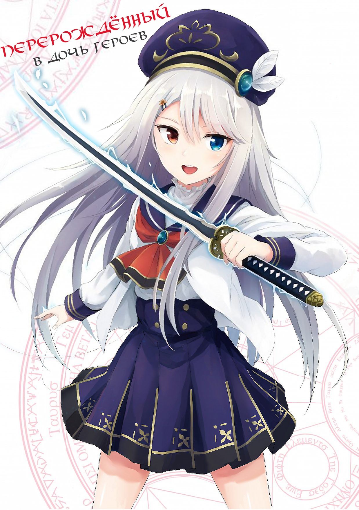

Перерождённый в дочь Героев

Японское наименование: 英雄の娘として生まれ変わった英雄は再び英雄を目指す
Английское наименование: The hero who has been reborn as the heroes daughter aims to become a hero again
Автор: Кабураки Нарука
Издательство: Syosetu
Вид: Вэб-новелл
Статус: Выпуск глав продолжается
Перевод с японского: Mushu Sibiriak
Редактор: Аборсен
Английское наименование: The hero who has been reborn as the heroes daughter aims to become a hero again
Автор: Кабураки Нарука
Издательство: Syosetu
Вид: Вэб-новелл
Статус: Выпуск глав продолжается
Перевод с японского: Mushu Sibiriak
Редактор: Аборсен
Аннотация:
Один из шести великих Героев, Герой Рейд, сошёлся в битве с джинном и потерпел поражение. Вот только после свой смерти он не отправился в чистилище или в ад. После небольшого разговора со странным божеством ему был дарован второй шанс.
Он переродился маленькой девочкой, которая по совместительству была дочерью его хороших друзей. Николь (так теперь зовут Героя Рейда) предстоит пройти большой путь и превзойти себя прошлого!